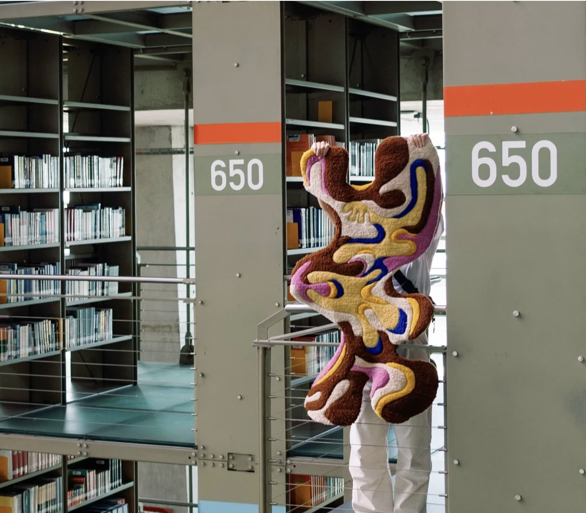
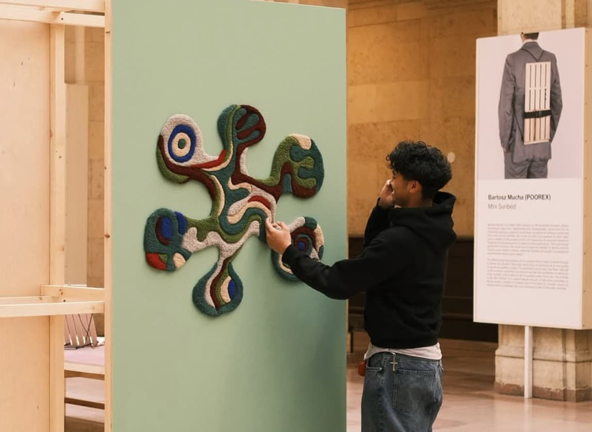

Yasmin Mora

La diseñadora textil Yasmin Mora, a través de su proyecto Umaguma, desarrolla piezas que exploran la relación entre identidad, materia y expresión. Su trabajo se centra en la creación de tapetes y textiles elaborados con lana teñida de manera natural, incorporando procesos artesanales en cada pieza. Su lenguaje visual combina formas orgánicas con una estética vibrante y psicodélica, dando como resultado objetos que funcionan tanto como elementos funcionales como piezas artísticas
Diseños

Winter collection, Ciudad de México, 2024
Ciudad de México, 2024

Exposición en Toronto, Canada, Febrero 2025